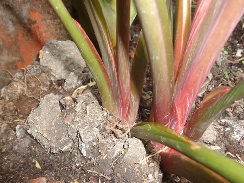
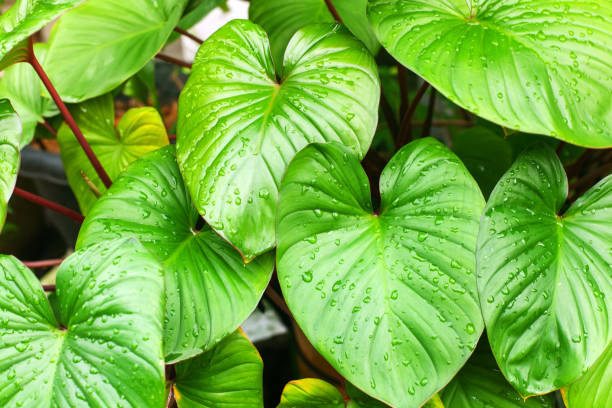

ลักษณะทางพฤกษศาสตร์
ราก และต้นเสน่ห์จันทร์แดง ต้นเสน่ห์จันทร์แดง มีลำต้นแท้จริงอยู่ใต้ดินหรืออาจโผล่ให้เห็นเหนือดินก็ได้ เรียกส่วนนี้ว่า หัว หัวมีลักษณะค่อนข้างกลม ขนาดประมาณ 1.5-3 เซนติเมตร เปลือกหัวมีสีน้ำตาลอมดำ เนื้อหัวด้านในมีสีขาว มีกลิ่นฉุนเล็กน้อย ส่วนปลายของหัวจะเป็นส่วนที่ก้านใบแทงโผล่ขึ้นมาเหนือดิน เรียกส่วนนี้ว่า ลำต้นเทียมโดยส่วนลำต้นเทียมจะมีความสูงประมาณ 45 – 60 เซนติเมตร
ส่วนรากเสน่ห์จันทร์แดงจะไม่มีรากแก้ว แต่จะประกอบด้วยเฉพาะรากแขนงอย่างเดียว ตัวรากแขนงมีลักษณะกลม สีน้ำตาล ขนาดประมาณ 2-3 มิลลิเมตร ยาวประมาณ 20-30 เซนติเมตร โดยตัวรากจะแตกออกจากหัวเป็นกระจุกจำนวนมาก
ใบเสน่ห์จันทร์แดง
ใบเสน่ห์จันทร์แดง ออกเป็นใบเดี่ยว แทงออกบริเวณปลายหัวเยื้องสลับตรงข้ามกันเป็นชั้นๆ ประกอบด้วยก้านใบที่มีลักษณะกลมยาว ยาวประมาณ 30-60 เซนติเมตร โคนใบใหญ่ แล้วค่อยเรียวยาวมาที่ปลายก้าน ก้านใบแก่มีสีเขียวอมน้ำตาล ก้านใบอ่อนมีสีเลือดหมู ถัดมาส่วนปลายก้านใบจะเป็นแผ่นใบ

แผ่นใบมีรูปหัวใจขนาดใหญ่ สีเขียวเข้ม และเป็นมัน หลังใบอาจมีสีแดงเลือดหมู กว้างประมาณ 10-15 เซนติเมตร ยาวประมาณ 15-20 เซนติเมตร โคนใบเว้าลึกเชื่อมกับปลายก้านใบเป็นรูปหัวใจ กลางใบใหญ่ ปลายใบแหลม ขอบใบเรียบ แผ่นใบด้านบนเป็นร่องตามความยาวของแนวเส้นใบ ส่วนแผ่นใบด้านล่างมองเห็นเป็นสันของเส้นกลางใบ และเส้นแขนงใบอย่างชัดเจน
ดอกเสน่ห์จันทร์แดง

ออกดอกเป็นช่อบริเวณกลางต้น ลักษณะของดอกเป็นแท่งกลมยาว ช่อดอกยาวได้ประมาณ 3-4 นิ้ว มีลักษณะอวบและจะมีกาบสีแดงห่อหุ้มเอาไว้
ผลเสน่ห์จันทร์แดง

ผลเสน่ห์จันทร์แดง มีขนาดเล็ก ทรงกลม
Auspicious tree of happiness ต้นไม้แห่งสุขヅ